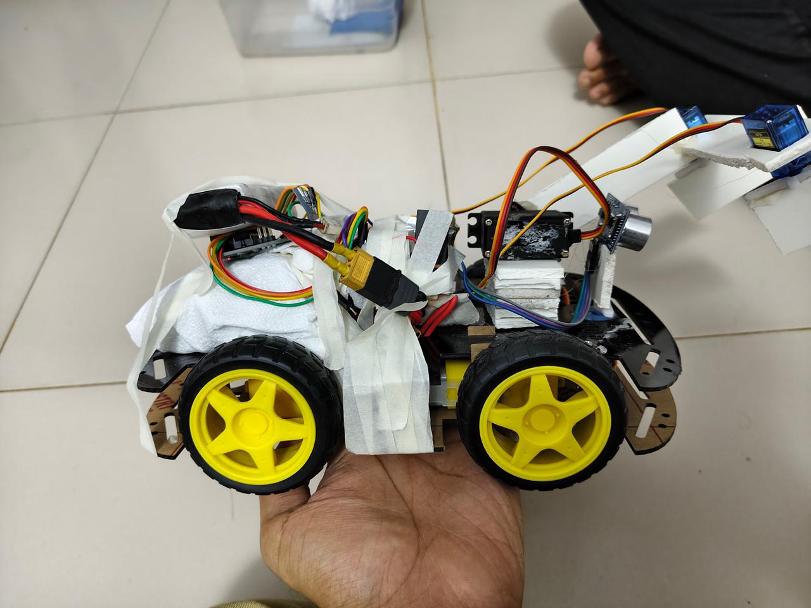
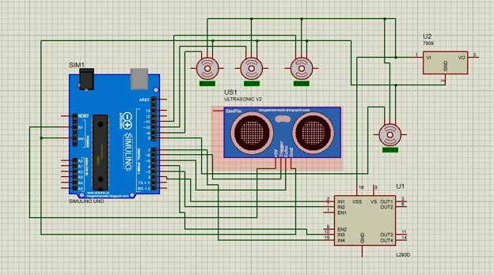

ROBOTICS / EMBEDDED SYSTEMS
Obstacle Detecting & Object Handling Bot
An autonomous Arduino-based mobile robot designed to detect obstacles, evaluate its surroundings and handle objects using a servo-controlled robotic arm and gripper.
PROJECT TYPE
Open-Ended Lab Project
COURSE
EEE 3210 — Micro-processor Unit Lab
CORE AREA
Robotics, Embedded Systems & Automation
MY ROLE
Arduino Programming Lead & Bot Development
01 / OVERVIEW
Project Overview
A small-scale autonomous robot combining mobility, obstacle detection and physical object manipulation. The robot uses an ultrasonic sensor for path monitoring and a servo-controlled arm and gripper for pick-and-place operation.
02 / PROJECT MEDIA
Project Gallery


03 / OBJECTIVES
Project Objectives
- Design a mobile robot capable of automatic obstacle detection.
- Build a robotic arm capable of gripping and releasing objects.
- Program the robot using Arduino for autonomous operation.
- Demonstrate a simplified automated pick-and-place system.
04 / HARDWARE
Main Components
05 / WORKING PRINCIPLE
Autonomous Sequence
Robot moves forward.
Ultrasonic sensor scans the path.
Within about 15 cm of an obstacle, the robot stops.
Sensor scans left and right to identify the clearer side.
Robot positions itself for object handling.
Arm lowers and gripper grips the object.
Arm lifts the object and robot moves toward the drop zone.
Gripper releases the object and the system resets.
06 / MY ROLE
Contribution
- Led Arduino programming.
- Contributed substantially to physical bot integration.
- Supported testing and troubleshooting.
- Supported presentation and final demonstration.